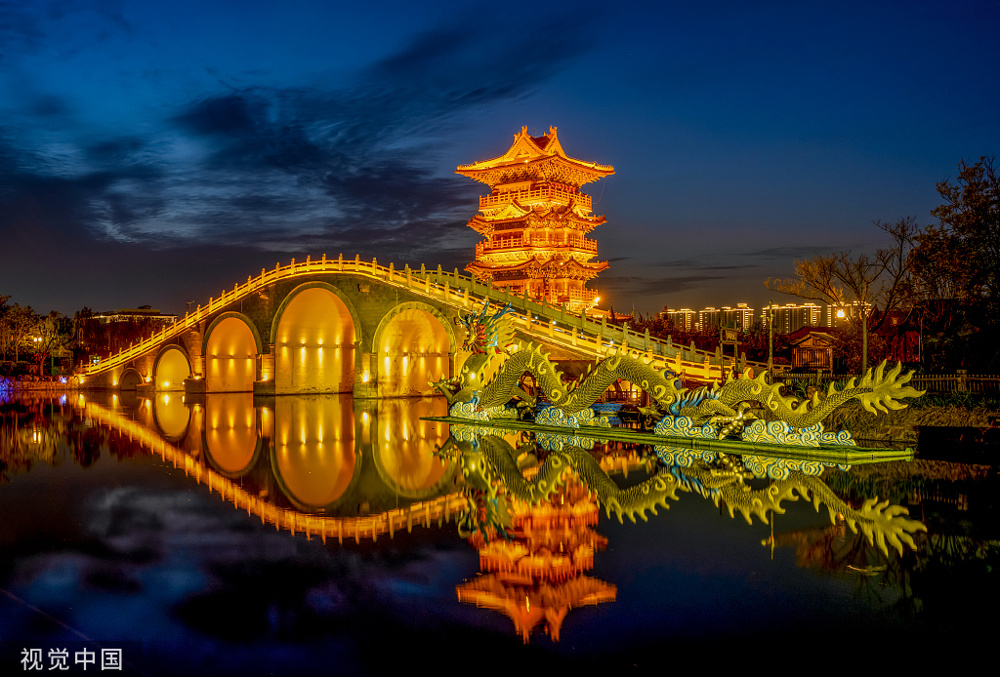
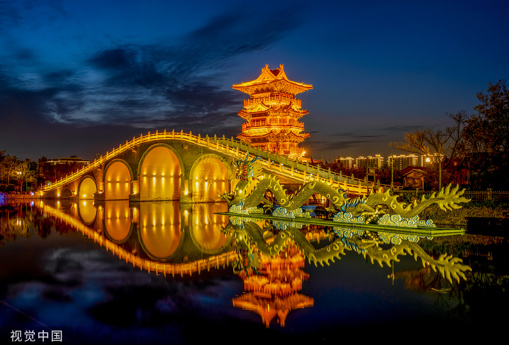

简介
清明上河园是按照北宋著名画家张择端的传世之作《清明上河图》为蓝本建造的大型宋代历史文化主题公园，坐落在八朝古都开封，是国家AAAAA级景区、国家文化产业示范基地。 清明上河园是中国著名八朝古都河南开封的一座大型历史文化主题公园，占地600余亩，坐落在开封城风光秀丽的龙亭湖西岸。它是依照北宋著名画家张择端的传世之作《清明上河图》为蓝本建造的，于1998年10月28日正式对外开放。 2021年10月，入选首批河南省中小学研学旅行实践基地拟认定名单。 2022年6月1日，入选河南首批省级文化和旅游业“白名单”企业。
景点特色
清明上河园是依照北宋著名画家张择端的传世之作《清明上河图》为蓝本建造的，于1998年10月28日正式对外开放。 《清明上河图》是中国古代一幅弥足珍贵的社会民俗生活长卷，画中反映了开封作为中国北宋时期都城的社会生活、市井风情和城建格局。 虽然它所反映的只是当时开封的一部分，但管中窥豹，可见一斑，由此也不难推想其他街市的大略形貌。有趣的是，千年前，张择端把它从现实搬到了画卷，千年后， 开封人又把它从画卷上搬到了现实。徜徉其中，常令人有“一朝步入画卷，一日梦回千年”的时光倒流之感。
地理环境
清明上河园地处中原腹地，豫东大平原、黄河下游大冲积扇南翼 ，属暖温带大陆性季风气候，四季分明，光照充足，气候温和，雨量适中。
建筑布局
清明上河园是按照1:1的比例把宋代著名画家张择端的代表作，堪称中华民族艺术之瑰宝的《清明上河图》复原再现的大型宋代历史文化主题公园。清明上河园占地600余亩，其中水面180亩，大小古船50多艘，房屋400余间，景观建筑面积30000多平方米，形成了中原地区最大的复原宋代的建筑。 2009年，清明上河园荣膺世界纪录协会中国第一座以绘画作品为原型的仿古主题公园，是中原大黄河郑、汴、洛黄金旅游线上的一个重要景区（点）。 清明上河园设驿站、民俗风情、特色食街、宋文化展示、花鸟鱼虫、繁华京城、休闲购物和综合服务等八个功能区，并设有校场、虹桥、民俗、宋都等四个文化区。还设立了宋代科技馆、宋代名人馆、宋代犹太文化馆和张择端纪念馆 。清明上河园主要建筑有城门楼、虹桥、街景、店铺、河道、码头、船坊等。园区按《清明上河图》的原始布局，集中展现宋代诸如酒楼、茶肆、当铺、汴绣、官瓷、年画等现场制作；荟集民间游艺、杂耍、盘鼓表演；神课算命、博彩、斗鸡、斗狗等千年（汴京）东京城京都繁华街市风情。
主要环境
虹桥
虹桥是中国古代桥梁史上的一项重要的创造，被列为中国十大名桥之一，也是清明上河园中的一处主要的景观。它横跨“汴河”，其势如虹，上可走马过人，下可载货行舟。游人每经此处，都要忍不住要多看两眼，或依栏摄影，留作纪念。
石雕清明上河图
清明上河图石雕全长33.32米，高2.23米。是迄今为止世界上最大的一幅《清明上河图》石雕。与原图一样具有极高的欣赏价值。
临水大殿
临水大殿由宣和殿、宣德殿连理而成，两殿造型巍峨庄重，偎依而立，如同一对在水边私语的爱侣。两座大殿在宋代是男宾、女眷的两个大包厢，与水心榭联结起来，就是一个功能考究的皇家歌剧院。